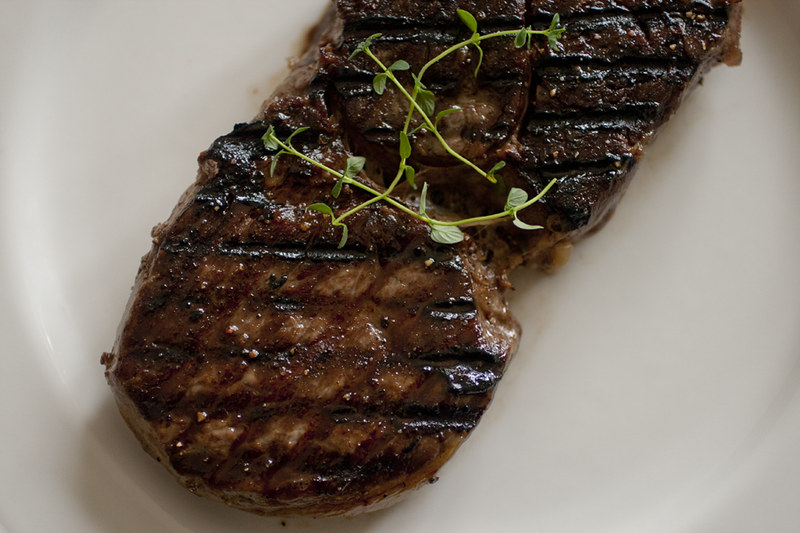
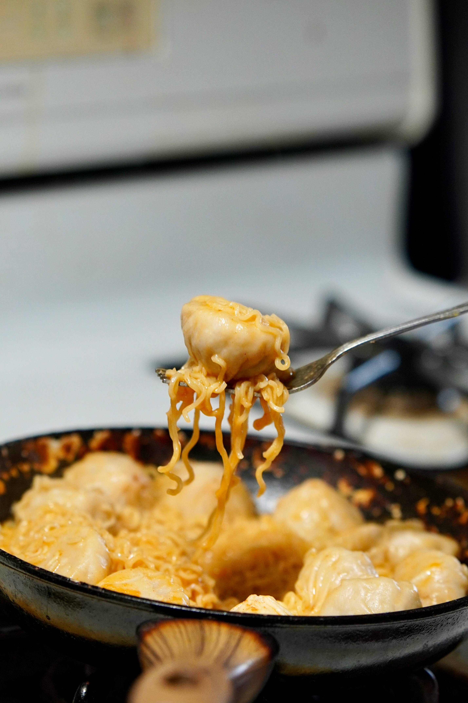
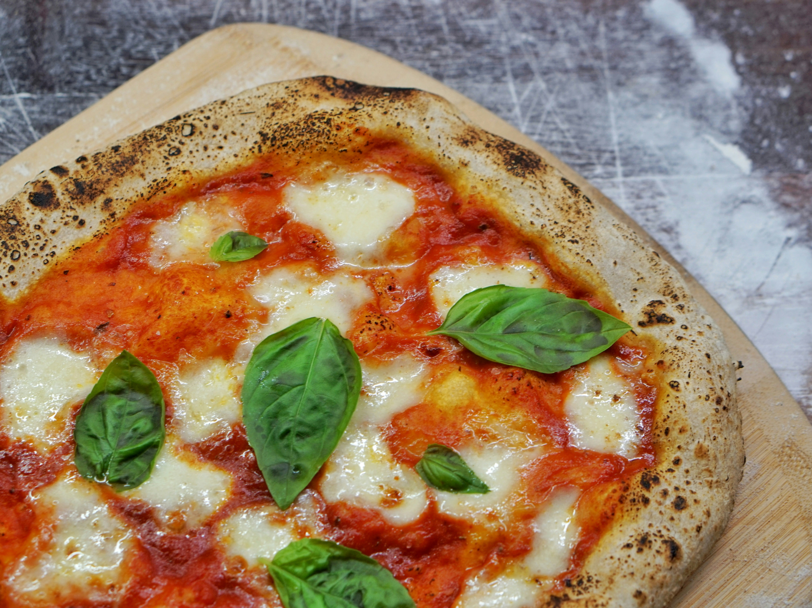

Steak has been my favorite dish since I was a child. Every year for my birthday I go out with my family to a steakhouse.

| Ingredient | Quantity |
|---|---|
| Steak | 1 |
Momo is a Nepalese dumpling-like dish, with meat or vegetables wrapped in a thin dough

| Ingredient | Quantity |
|---|---|
| Flour | 2 cups |
| Water | 1/2 cup |
| Ground Chicken | 14 oz |
| Onion | 1 |
| Garlic | 3 cloves |
| Ginger | 1 tbsp |
| Cilantro | 2 tbsp |
| Salt | 1 tbsp |
| Cumin | 1/2 tbsp |
Margaherita Pizza is a traditional pizza topped with mozzarella, peeled tomatoes, basil, and olive oil

| Ingredient | Quantity |
|---|---|
| Flour | 2 cups |
| Warm water | 2/3 cup |
| Yeast | 1 tsp |
| Salt | 1 tsp |
| Tomato Sauce | 3/4 cup |
| Mozzarella | 4 oz |
| Basil | 6 leaves |
| Olive Oil | 1 tbsp |